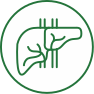

Печень
-
Капельница «Очищение печени»

-
Защищает и восстанавливает печень, помогает снять алкогольную, лекарственную и вирусную интоксикацию.
Влияя на все протекающие в печени процессы, улучшает обмен белков и липидов, усиливает отток желчи и
восстанавливает антиоксидантную защиту организма, облегчает симптомы диспепсии.
-
Капельница «Детокс»
- Активирует процессы детоксикации в печени, работу иммунной системы,
желудочно-кишечного тракта и легких. Укрепляет защитные силы организма и способствует быстрому
обезвреживанию и выведению вирусов и бактерий, пищевых и лекарственных токсинов. Усиливает
антиоксидантную систему, увеличивая устойчивость к развитию заболеваний.
-
Спектральная фототерапия (СФТ) на проекцию органов
- Данный метод доставки необходимых микроэлементов к пораженному органу
с помощью мультиспектральной энергии света сочетает принципы фототерапии и рефлексотерапии. Лечебный
эффект достигается за счет насыщения организма определенными микро- и макроэлементами, которые участвуют
во всех обменных процессах, обеспечивая нормальное функционирование организма.
-
Введение препарата «Лаеннек»
-
Лаеннек – плацентарный препарат с уникальным полифункциональным и многокомпонентным составом, где каждый
компонент усиливает взаимное действие всех компонентов. Препарат содержит природные биостимуляторы,
витамины, факторы роста клеток, минералы, аминокислоты и сотни ферментов. Совокупность этих компонентов
вызывает неспецифические реакции омоложения организма. На клеточном уровне активизируются застойные
жизненные процессы, что устраняет имеющиеся патологии и препятствует возникновению новых.
Гармонизируются
структуры и системы тела, его функционирование возвращается к состоянию молодости.
-
Лимфотропное введение гепатопротекторов
- Метод лечения, предполагающий введение лекарственных средств
непосредственно в лимфатическую систему – зону максимального скопления лимфатических сосудов и узлов.
Отличается высокой эффективностью, которая обусловлена наличием связей между органами/тканями и
лимфатической системой. Это обеспечивает адресную доставку лекарственного средства непосредственно к
больному органу.
-
Консультации врачей-специалистов
-
Гастроэнтеролог, диетолог.
-
Фиброэластометрия печени
-
Метод диагностики заболеваний печени, основанный на действии ультразвука. В ходе исследования
оценивается скорость распространения в тканях органа отдельных звуковых импульсов, что позволяет выявить
участки с пониженной эластичностью («плотные»).
-
Программа «Детокс»
- Это комплекс лечебно-профилактических мероприятий, направленных на
избавление от токсинов. Запускает природные механизмы самооздоровления и очищения. Также включает в себя
диагностику.